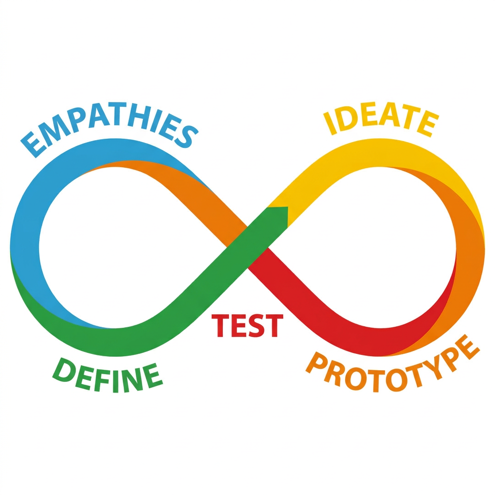
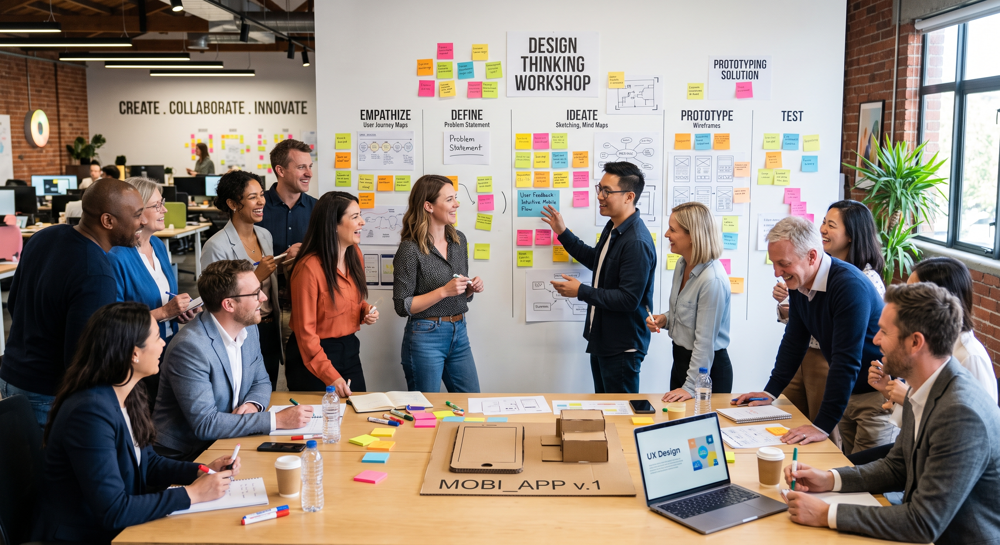

Design Thinking Workshop
사용자 중심 문제 해결 워크숍
Design Thinking Workshop이란?
서로 다른 직무의 동료가 모여 사용자 관점에서 문제를 정의하고 해법을 검증하는 실습 세션
Design Thinking Workshop은 여러 직무의 팀원들이 모여 사용자의 실제 불편과 맥락을 파악하고, 해결 방안을 직접 만들어 보며 검증하는 실습 중심 협업 세션입니다.
다양한 직무의 협업
기획자, 개발자, 디자이너, 현장 실무자가 한자리에 모여 같은 문제를 각자의 시각에서 함께 살핍니다.
사용자 맥락의 이해
공급자 시각의 가설을 잠시 내려놓고, 실제 사용자가 겪는 불편과 말로 드러나지 않은 니즈(Latent Needs)를 파악합니다.
만들며 검증하기
긴 구두 논의에 머무르지 않고, 손으로 간단한 프로토타입을 만들어 확인하며 실행 가능한 해법을 추립니다.
Design Thinking Workshop
사용자 중심의 문제 정의와 실무 해법 도출
인간 중심 관점
기술이나 내부 가정이 아니라, 실제로 불편을 겪는 사용자의 맥락(Context)과 잠재 니즈(Latent Needs)에서 출발합니다.
행동 지향 문화
추상적인 논쟁을 줄이고, 페이퍼 목업과 손스케치로 아이디어를 눈에 보이게 만들어 확인합니다.
반복을 통한 개선
처음부터 완성된 해법은 없습니다. 초기 시행착오에서 확인한 문제를 바탕으로 솔루션을 다듬어 갑니다.
협업을 위한 4가지 그라운드 룰
모든 팀원이 심리적 안전감 속에서 편하게 의견을 내기 위한 기본 약속입니다.
판단을 유예하세요 (Defer Judgment)
발산 단계에서는 '예산상 안 돼' 같은 평가를 잠시 미루고, '하지만' 대신 '그리고(Yes, and)'로 이어갑니다.
질보다 양에 집중하세요 (Go for Quantity)
충분한 수의 대안을 먼저 꺼내 놓아야 실효성 있는 해법을 고를 수 있습니다. 설익은 의견도 그대로 적습니다.
초심자의 시선을 유지하세요 (Beginner's Mindset)
직급과 익숙한 업무 관성을 잠시 내려놓고, 처음 접하는 사용자의 시선으로 '왜 그럴까?'를 질문합니다.
생각하지 말고 만드세요 (Bias Toward Action)
말로 길게 설명해도 엇갈리는 내용은 간단한 손그림이나 종이 모형 하나로 보여줄 때 빠르게 합의됩니다.
Design Thinking 5단계 프로세스
정해진 선형 구조가 아니며, 언제든 이전 단계로 돌아갈 수 있는 유연한 여정입니다.
Empathize
사용자의 숨겨진 니즈와 고통을 깊이 관찰하고 경청합니다.
Define
인사이트를 기반으로 진짜 풀어야 할 핵심 문제를 명확히 규명합니다.
Ideate
선입견 없이 솔루션을 폭넓게 도출하고 핵심을 선별합니다.
Prototype
손으로 만지고 검증할 수 있는 저충실도 모형을 제작합니다.
Test
사용자 반응을 관찰하고 솔루션과 가설을 개선합니다.
Design Thinking 인피니티 루프 프레임워크
문제 맥락(Context)과 해결책 형태(Form) 사이를 오가며 가설을 검증하는 순환 구조입니다.

Design Thinking 실습 방식 & 팀 활동
짧은 메모와 손그림으로 생각을 꺼내 놓고 함께 검토하는 팀 활동 기본 원칙입니다.

Empathize: 사용자 맥락 이해하기
우리가 해결하려는 문제는 공급자의 가정이 아니라, 실제 사용자가 겪는 문제입니다.
Observe (관찰)
사용자가 실제 업무 환경에서 행동하는 모습을 선입견 없이 살펴봅니다.
- 행동의 마찰 지점 기록
- 언어적/비언어적 단서 포착
Engage (대화/인터뷰)
단순한 사실 확인을 넘어 사용자가 느낀 감정과 행동 이유를 묻고 듣습니다.
- "왜?"를 거듭 묻기
- 최근의 구체적 일화 질문
Immerse (직접 체험)
사용자가 겪는 물리적·업무적 환경을 직접 따라 해 보며 막히는 지점을 확인합니다.
- 사용자 워크플로우 직접 실행
- 불편함과 피로도 체감
공감 인터뷰 기본 원칙
원하는 답을 유도하지 않고, 실제 경험과 구체적 맥락을 듣기 위한 질문법입니다.
효과적인 인터뷰 질문
- "가장 최근에 이 문제를 겪었을 때의 상황을 구체적으로 들려주세요."
- "그 순간에 어떤 생각이 드셨나요? 왜 그렇게 느끼셨나요?"
- 침묵이 흐르더라도 3~5초간 기다려 상대가 생각을 정리해 말하게 합니다.
- 한 명은 질문을 진행하고, 다른 한 명은 발언과 맥락을 그대로 기록합니다.
피해야 할 질문 방식
- "보통 어떻게 하시나요?" 같은 일반화 질문 (구체적 맥락이 사라집니다).
- "이런 기능이 있으면 편하시겠죠?" 같은 유도 질문 (예의상 동의하게 됩니다).
- 답변 도중에 끼어들어 내 생각이나 해결책을 먼저 설명하기.
- 빈도나 수치만 묻고 당시의 상황과 감정적 이유를 놓치는 것.
[실습] 페르소나 및 공감 맵 작성
우리 팀이 집중할 타깃 사용자를 정하고, 발언·행동·생각·감정을 네 영역으로 정리합니다.
[실전 예시] 김지호 매니저의 공감 맵
실습 결과물은 이렇게 나옵니다. 완벽한 문장이 아닌 솔직한 포스트잇 메모면 충분합니다.
Define: 핵심 문제 정의하기
모든 불편을 한 번에 다 풀 수는 없습니다. 오늘 팀이 집중해서 다룰 문제 범위를 좁힙니다.
현상(Fact) vs 인사이트(Insight)
겉으로 드러난 현상은 결과일 뿐입니다. 그 뒤에 있는 실제 원인과 동기를 짚어야 합니다.
- 현상: "퇴근 직전 업무 요청으로 야근이 잦다."
- 인사이트: "요청자의 불안감 때문에 사소한 중간 확인이 과도하게 반복되고 있다."
좋은 문제 정의의 조건
- 사용자 중심: 특정 시스템이나 기능 부재가 아니라 사람의 경험에서 정의합니다.
- 구체적인 범위: 팀이 이번 세션에서 다룰 수 있을 만큼 대상을 분명히 좁힙니다.
- 열린 질문: 특정 해법을 미리 단정하지 않고 여러 대안이 나올 여지를 남깁니다.
POV와 HMW 문장 구조
발견한 인사이트를 아이디어 탐색용 질문으로 옮기는 두 단계 문장 틀입니다.
Point of View (POV) 정의
[사용자]는 [필요/니즈]가 필요하다. 왜냐하면 [발견한 인사이트] 때문이다.
How Might We (HMW) 질문
"우리가 어떻게 하면 [사용자]가 [핵심 제약]을 덜고 [목표]를 달성하도록 도울 수 있을까?"
[실습] POV 문장 및 HMW 질문 확정
오후 세션에서 팀이 함께 풀어 볼 핵심 HMW 질문 1개를 선정합니다.
[실전 예시] 완성된 POV 문장과 HMW 질문
공감 맵의 Pain Point가 어떻게 날카로운 질문으로 바뀌는지 확인하세요.
"타 부서 협업이 잦은 김지호 매니저는 상대방의 실시간 작업 상태를 투명하게 확인하길 원한다. 왜냐하면 직접 재촉하는 과정에서 심한 감정 소모와 관계 단절의 불안감을 느끼기 때문이다."
Ideate: 양적 발산과 대안 확장하기
처음 떠오르는 2~3개 아이디어는 대개 익숙한 대안입니다. 충분한 양을 꺼내 놓아야 새로운 실마리가 보입니다.
판단 유예 (No Judging)
"예산이 없어서 안 돼", "전례가 없어" 같은 평가는 수렴 단계로 미루고 대안부터 모읍니다.
엉뚱한 발상 환영 (Encourage Wild)
당장 비현실적으로 보이는 아이디어도 제약을 덜어낸 해법의 단서가 될 수 있습니다.
동료의 생각에 살 붙이기 (Build on Ideas)
앞사람의 아이디어에 조건을 바꾸거나 요소를 더해 다른 형태의 대안으로 확장합니다.
발산과 수렴 기법: Crazy 8s & 2x2 매트릭스
짧은 시간 안에 개인별로 다양한 대안을 그리고, 팀 기준으로 후보를 압축합니다.
Crazy 8s (크레이지 에잇)
A4 용지를 8칸으로 나눈 뒤, 8분 동안 1분마다 1칸씩 서로 다른 8개의 아이디어를 스케치합니다.
- 긴 문장보다는 도형·화살표·짧은 메모 위주로 표현
- 완성도를 따지지 않고 직관적으로 빠르게 칸 채우기
Impact vs Effort 2x2 매트릭스
도출된 아이디어들을 '사용자 임팩트'와 '구현 부담' 두 축 위에 배치해 우선순위를 가립니다.
- Quick Wins: 높은 임팩트 - 낮은 부담 (우선 실행 후보)
- Big Bets: 높은 임팩트 - 높은 부담 (핵심 가설 검증 대상)
[실습] 아이디어 발산 및 후보 솔루션 선정
개인 스케치와 팀 공유로 대안을 충분히 모은 뒤, 프로토타입으로 검증할 1개를 정합니다.
[실전 예시] Crazy 8s 스케치와 2x2 매트릭스
A4 종이에 손으로 그린 8칸 아이디어와 투표로 압축된 결과물 모습입니다.
Prototype: 생각하지 말고 만들기
프로토타입의 목적은 '완성'이 아닙니다. '생각을 구체화하고 빠르게 학습하는 것'입니다.
저충실도 (Low-Fidelity)
종이, 포스트잇, 박스, 모바일 와이어프레임 등으로 30분 안에 만듭니다. 너무 잘 만들면 버리기 아까워집니다.
핵심 가설에 집중
전체 서비스를 다 만들지 마세요. "사용자가 과연 이 기능을 원할까?"를 검증하는 단 하나의 핵심 접점만 제작합니다.
초기 검증으로 수정 비용 줄이기
종이 단계에서는 몇 분 만에 고칠 수 있는 문제도, 실제 개발 이후에 발견하면 수정에 큰 시간과 비용이 듭니다.
상황별 프로토타입 형태
아이디어의 성격(디지털 앱, 업무 프로세스, 물리적 서비스)에 맞는 형식을 고릅니다.
페이퍼 와이어프레임 (Paper Mockup)
디지털 화면/앱 서비스인 경우, 손으로 종이에 주요 화면 3~5장을 그려 참가자가 직접 손가락으로 누르게 합니다.
스토리보드 (Storyboard)
업무 프로세스나 고객 여정인 경우, 사용자가 문제를 겪는 상황부터 해결되는 순간까지 6컷 장면으로 표현합니다.
롤플레잉 / 모형 (Roleplay / Physical)
상담, 안내, 팀 간 소통 등 서비스 상호작용인 경우, 팀원이 역할을 나누어 1분짜리 상황극으로 시연합니다.
[실습] 저충실도 프로토타입 제작
논의를 멈추고 직접 재료를 다뤄 보세요. 30분 후 옆 조 팀원이 조작해 볼 모형을 만듭니다.
[실전 예시] A4 용지 3장으로 만든 페이퍼 목업
코딩이나 복잡한 툴 없이, 종이와 포스트잇으로 20분 만에 구현한 모형입니다.
(예상 착수 시간: 15:30)"
Test: 설득하지 말고 관찰하기
테스트는 아이디어를 홍보하는 자리가 아니라, 가설이 어긋나는 지점을 확인하는 과정입니다.
Show, Don't Tell (보여주고 설명하지 말기)
사용자에게 프로토타입을 건네고 스스로 탐색하게 두세요. 먼저 사용법을 설명하면 실제 반응을 확인하기 어렵습니다.
- 사용자가 머뭇거리거나 헤매는 지점이 핵심 개선 포인트
- "어떤 생각으로 누르시는지 말씀하면서 조작해 보세요"라고 요청
비판을 개선 단서로 받아들이기
사용자가 "이해 안 가요", "불편해요"라고 말할 때 변명하지 마세요. "어떤 부분에서 그렇게 느끼셨나요?"로 이유를 묻습니다.
- 프로토타입에 대한 지적을 개인에 대한 평가로 받아들이지 않기
- 구체적인 불편 지적일수록 다음 수정 방향이 분명해집니다.
피드백 캡처 그리드 (Feedback Capture Grid)
테스트 중 수집되는 다양한 반응을 4개 영역으로 구조화하여 정리합니다.
마음에 들었던 점
사용자가 즉각적으로 매력을 느끼거나 유용하다고 반응한 기능과 요소들을 기록합니다.
아쉽거나 개선할 점
사용자가 혼란을 겪거나 불만을 표출한 지점, 작동하지 않은 가정들을 가감 없이 적습니다.
궁금하거나 해결 안 된 의문
사용자가 던진 질문이나, 테스트 도중 팀 내부에서 새롭게 생긴 의문점을 기록합니다.
새롭게 떠오른 영감
테스트 상호작용 과정에서 즉흥적으로 파생된 새로운 솔루션이나 기능 아이디어를 메모합니다.
[실습] 크로스 팀 상호 테스트
다른 조의 팀원을 사용자로 모셔와 직접 프로토타입을 경험하게 하고 피드백을 수집합니다.
[실전 예시] 완성된 피드백 캡처 그리드
실제 동료가 종이 프로토타입을 만져보고 남겨준 4가지 피드백 결과입니다.
최종 공유: 3분 스토리텔링 피칭
단순한 기능 설명이 아니라, 우리가 발견한 '사람의 이야기'를 들려주세요.
누구의 문제인가?
우리가 만난 대상의 고통과 일상을 30초 안에 공감 가도록 소개합니다.
진짜 핵심 문제는?
겉으로 드러난 현상이 아닌, 우리가 발견한 결정적 인사이트를 공유합니다.
어떻게 해결했는가?
프로토타입을 화면이나 무대에서 직접 시연하며 핵심 솔루션을 보여줍니다.
테스트에서 무엇을 배웠는가?
피드백을 통해 얻은 뜻밖의 교훈과 앞으로의 개선 계획을 밝힙니다.
회고: I Like, I Wish, What If
오늘 활동에서 좋았던 점, 아쉬운 점, 실무 적용 아이디어를 포스트잇으로 정리합니다.
I Like... (좋았던 점)
"오늘 워크숍 과정에서 우리 팀의 ~한 시도와 협업 방식이 좋았습니다."
I Wish... (아쉬웠던 점)
"다음번에 다시 진행한다면 ~한 부분을 조금 더 확인해 보고 싶습니다."
What If... (실무 적용)
"오늘 도출한 아이디어를 우리 팀 실제 업무 절차에 적용해 본다면 어떨까?"
워크숍 이후: 내일부터 시작하는 실행
오늘 만든 가설과 프로토타입이 일회성 논의로 끝나지 않도록 다음 행동을 정합니다.
업무 복귀 후 기록 공유
오늘 작성한 페르소나, HMW, 프로토타입 사진을 팀 공유 채널에 바로 남깁니다.
1주일 검증 스프린트
가장 우선순위가 높은 개선안 1개를 골라 다음 주까지 실제 업무에서 작게 시험해 봅니다.
사용자 기준 질문하기
회의에서 의견이 엇갈릴 때 "실제 사용자는 이 상황을 어떻게 겪고 있는가?"를 먼저 확인합니다.
Design Thinking Workshop Web Presentation
방법론 출처: Stanford d.school Design Thinking Bootleg (CC BY-NC-SA 4.0), IDEO U, Google Ventures Design Sprint(Crazy 8s). 이 워크숍 자료는 위 기관과 제휴하거나 후원받지 않았습니다. 상세 출처와 라이선스는 NOTICE를 참고하세요.